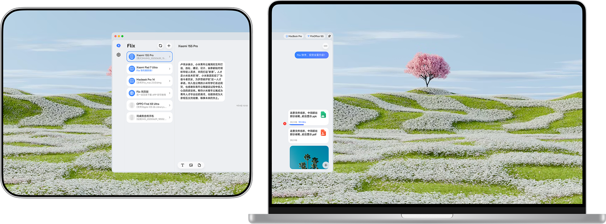
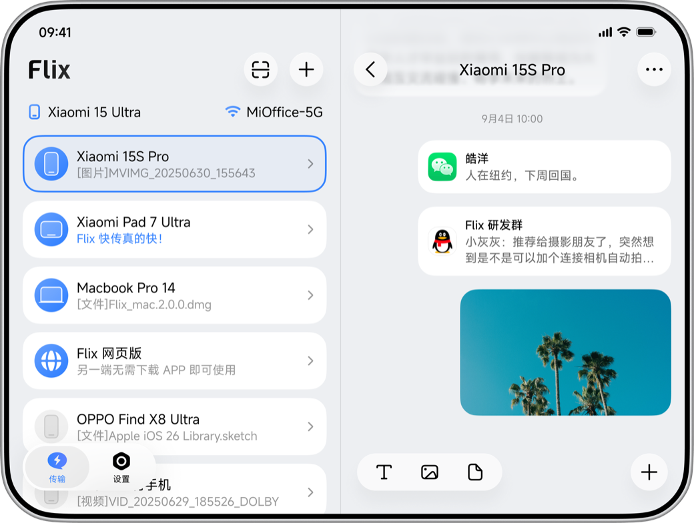

用了一周 flix，我把手里的远程投屏软件全卸了
一款主打局域网协同的国产工具，文件传输、副屏扩展、通知流转一站式搞定。上手几天后的真实体验，聊聊它好在哪、又有哪些地方还欠打磨。
上周出差带了台 ThinkPad X1 Carbon，酒店房间里只有它一块屏。写方案时左边要开文档、右边要查参考资料，窗口切来切去折腾得够呛。想起之前在flix官网上收藏过一款叫 flix 的工具——主打局域网多设备协同。从下载拿了安装包，抱着试试的心态装了一下。结果这一试，直接把我电脑上原来那两个远程投屏软件都卸了。
说实话，我对这类工具本来没抱太高期望。之前用过不少同类型的，要么连接麻烦、要么画面卡得像 PPT，传个大文件还要先压缩再解压。但 flix 给我的第一印象就不一样——安装完打开，主界面干干净净，局域网里的设备几秒钟就扫出来了，连我那台躺在枕头边吃灰的 iPad 都精准识别到了。点一下就能连上，没有一堆配置向导。
副屏扩展：把平板用出生产力
我最先试的就是副屏扩展功能。笔记本 HDMI 口被占了，想加第二块屏基本只能走无线。flix 的做法很简单：电脑上点「副屏扩展」，iPad 上弹个确认，同意之后 iPad 就变成了一块真正的扩展屏——不是投屏那种镜像，是 Windows 显示设置里能独立排布的第二显示器。

设置好之后我把 iPad 竖过来立在笔记本右边，主屏写方案，副屏放竞品资料和参考文档。窗口直接拖过去就行，跟插了个实体显示器没区别。最惊喜的是延迟——我本来以为无线副屏会有明显滞后，结果打字、滚动都很跟手，甚至在副屏上开了个浏览器标签页滑动都没感觉到拖影。2.0.4 版本之后还支持自动连接，配对过几次之后，每次同网开机自动恢复副屏，不用重复点来点去。
唯一的小遗憾是 iPad 端暂时只能当副屏不能反向把 iPad 的屏投到电脑上，不过对我来说需求不强，也就没太在意。
文件传输：拖拽就发，比微信靠谱太多
副屏体验到位之后，接着试了传文件。选中文件往对方设备图标上一拖就发出去了，没有中间环节，不用等对方接收确认（可以在设置里开自动接收）。前两天给同事传了个 800MB 的项目压缩包，局域网里几秒就完事——对比起之前用微信传个 100MB 都要等半天还要担心超时，简直是降维打击。
还有个细节让我挺意外的：传大文件时 flix 会显示实时进度条和速度，不是那种含糊的「正在传输」。而且传输完会保留原文件的完整目录结构，不是一股脑全扔到接收文件夹根目录，找起来方便多了。
不过这里要提一句 Windows 防火墙的坑。我第一次在公司内网用的时候，电脑能被同事看到但就是传不来文件，卡了好一阵。后来去flix文档翻了一下才知道是防火墙默认拦截了入站连接。好在 flix 1.5.1 之后在帮助页里加了一键修复按钮，点一下自动配置放行规则，比我手动去控制面板里找半天方便多了。2.0.7 还修过一次防火墙设置偶尔不生效的问题，如果遇到修了还不通，升级到最新版基本就能解决。
通知流转：手机放包里也不耽误事
第三个让我觉得值的功能是通知流转。手机平时都是放包里或者充电，开会时掏出来看消息很不礼貌。开了通知流转之后，手机收到的验证码、微信消息、甚至快递取件通知，都会同步弹到电脑屏幕右下角。

设置也很灵活：可以按设备单独开关，不想让 iPad 收到验证码通知就只在电脑上开；2.2.0 版本之后常驻通知也不会再重复刷屏了——之前被前台服务提醒反复弹的朋友应该会有感触。当然隐私层面还是要注意，建议只在自己独用的设备组合里开，家人的设备或者演示设备就别开了，敏感通知留在手机本地更稳妥。
哪些人应该装，哪些人可以再等等
用了一周下来，flix 给我的感觉是一款完成度很高的局域网协同工具。副屏扩展和文件传输这两个核心体验做得很扎实，通知流转是加分项。如果你有以下场景，值得一试：
- 出差党：只有一台笔记本但需要多屏协作，平板就能当副屏
- 家庭多设备用户：电脑、手机、平板之间频繁传文件，不想走微信或网盘
- 小团队办公室：同事之间传大文件、投屏演示，局域网速度快还不耗流量
不过也有一些情况可以再等等：如果你只有一台设备、或者跨网络（不同局域网）使用需求多，flix 目前主要面向同网场景，跨网能力有限；另外 iOS 端功能比 Android 和桌面端略少一些，苹果全家桶用户可能还有观望空间。
整体来说，这款工具的定位很清晰——不搞全家桶，就把局域网多设备协同这一件事做好。从实际体验来看，它确实做到了。不想翻墙的朋友可以直接去Gitee或GitCode拿源码和文档，习惯用 GitHub 的朋友在GitHub上也能找到完整备份。